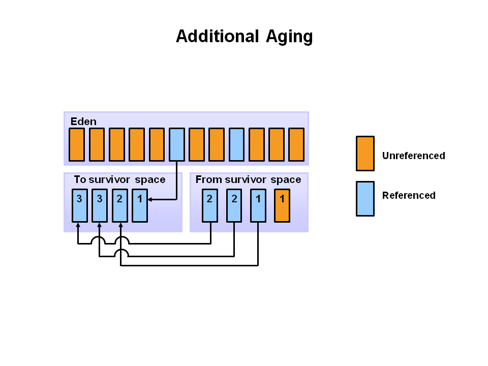

Generational Garbage Collection Process
The pictures below walks through the object allocation and aging process in the JVM.
Step I: Object Allocation
First, any new objects are allocated to the eden space. Both survivor spaces start out empty
Setp II: Filling the Eden Space
When the eden space fills up, a minor garbage collection is triggered.
Step III: Copying Referenced Objects
Referenced objects are moved to the firet survivor space. Unreferenced objects are deleted when the eden space is cleared.

Step IV: Object Aging
At the next minor GC, the same thing happens for the eden space. Unreferenced objects are deleted and referenced objects are moved to a survivor space. However, in this case, they are moved to the second survivor space (S1). In addition, objects from the last minor GC on the first survivor space (S0) have their age incremented and get moved to S1. Once all surviving objects have been moved to S1, both S0 and eden are cleared. Notice we now have differently aged object in the survivor space.

Step V: Additional Aging
At the next minor GC, the same process repeats. However this time the survivor spaces switch. Referenced objects are moved to S0. Surviving objects are aged. Eden and S1 are cleared.

Step VI: Promotion
This slide demonstrates promotion. After a minor GC, when aged objects reach a certain age threshold (8 in this example) they are promoted from young generation to old generation.

Step VII: Additional Promotion
As minor GCs continue to occure objects will continue to be promoted to the old generation space.

Step VIII: GC Process Summary
So that pretty much covers the entire process with the young generation. Eventually, a major GC will be performed on the old generation which cleans up and compacts that space.